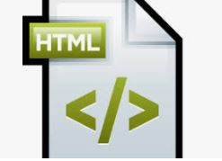
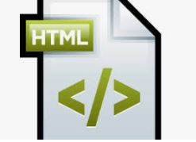

Etiquetas Básicas de HTML
¿Qué es una etiqueta HTML?
HTML es un lenguage de marcado, esto quiere decir que está desarrollado con códigos que una persona los pueda leer antes de compilarlo. el contenido en una página web está «marcado» con etiquetas y atributos representados en códigos para instruir al navegador web sobre cómo presentar el contenido. las etiquetas HTML son esas mismas etuquetas de marcado representadas en codigo.
 

"Cuando escribimos código en HTML, estamos escribiendo etiquetas HTML. Todas las etiquetas HTML están hechas con un número de partes específicas, incluyendo: - El carácter “menor que” - Una palabra o carácter que determina qué etiqueta se está escribiendo - Cualquier número de atributos HTML que se quiera usar, escritos de la forma nombre=”valor” - El carácter “mayor que” >" (Idevik X, 2019)
body> para el contenido, head> para información sobre el documento, div> división dentro del contenido, a> para enlaces, strong> para poner el texto en negrita, br> para saltos de línea, H1>…H6> para títulos dentro del contenido, img> para añadir imágenes al documento, ol> para listas ordenadas, ul> para listas desordenadas, li> para elementos dentro de la lista, p> para parágrafos, span> para estilos de una parte del texto.